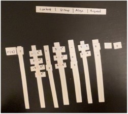
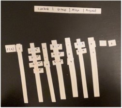

Reflection
Equation editing can be a headache, especially when existing tools make the workflow frustrating and slow. To address this pain point, we designed FormulaForge - a better way to customize formulas.
Authors of mathematical content such as researchers, lecturers, and students oftentimes need to present that content as formulas, and even need to augment those formulas to make them more comprehensible. Augmentations are edits such as applying colors or adding boxes.
While current solutions, such as Overleaf and Powerpoint, allow you to insert... (continue issues with current solutions)
In order to address this problem of formula augmentation, we went through a design process. We interviewed our target users, compared two low fidelity prototypes, interviewed users with a high fidelity prototype, performed an experiment, and finally implemented a design around user response.
Initial Interviews
To understand how prospective users currently modify formulas, we spoke to 6 academic users - lecturers, educational YouTubers, and researchers.
Research Goals
-
What techniques do participants incorporate in their presentations?
- Spacing/Alignment
- Augmentation/Annotations (color, bounding boxes, arrows & text boxes, etc.)
- Animation, transitions
- Visualization
- Are there techniques that they aren't incorporating because doing so seems arduous?
- What frustrations or workflow annoyances do they experience when trying to create presentations?
- How important are visualizations?
Interview Guide
- Pre-screening: we should confirm with potential participants ahead of time that they've tried to make screen-based presentations of formulas before.
- In what capacity do you need to present formulas? e.g. presenting research at conferences, delivering lectures to university undergraduates
- Do you have any materials you've prepared in the past that you can share with us? Ask them to walk through some of the presentation that's focused on a particular formula. They don't have to (and shouldn't) walk through the entire lecture.
- How do you get formulas into your presentations? e.g. screenshot of LaTeX, Powerpoint/Keynote equation editor
-
Once a formula is in your presentation, do you ever need to change
its formatting?
- For this specific presentation, do you ever revisit it? When have you done so, and what have you changed?
- How much time do you put into edits? e.g. for lecture slides, do they revisit it yearly when prepping for the class?
- What's your process for editing these presentations? Do you work from beginning to end, out of order, something else? Do you ever revisit slides to revise them?
Findings
We found that they used several different platforms to create content, but all preferred LaTex for writing math content. They also shared their own struggles with formatting equations, which became inspiration for features to add to FormulaForge. For example, one interview shared how recompiling their editor took 10 seconds just to see one change, which slowed down their thinking and note taking loop. Additionally, users discussed how it was difficult to change existing LaTex code, especially when the formulas were long. Overall, there seemed to be a need and a want for the application we set to make: a way to make math equation editing easier.
Low Fidelity Prototypes
With several recurring issues among interviewees, we set out to create a platform that would resolve as many of them as possible. The first of two possible solutions focused on making a slideshow editor that supported formula augmentation, defining formulas / recurring terms, and slide grouping. The other solution focused on formula manipulation: changing spacing, alignment, as well as changing which term the formula was grouped by.
Both evaluators mentioned potentially combining the two prototypes: a high-level editor for presentation content with a good interactive component for making specific layout/augmentation edits to specific formulas. We decided to synthesize a new prototype combining aspects of both prototypes while also reworking the “content outline” to instead be a “content planning” canvas that mimics a pen-and-paper experience. The canvas-based presentation is also motivated by our formative study, which showed that some users plan their content on pen and paper before manually transferring it to a slide editor.
We envisioned an editor with an infinite canvas that can be interactively panned/zoomed. Users can quickly add/edit formulas by double clicking on empty space or existing formulas, respectively. Interactive features for laying out formulas are retained from the “Layout Editor” prototype, enabling quick typesetting. Users can copy and paste typeset formulas from the canvas into their preferred slide editing software to construct their actual presentation.
 

High Fidelity Prototypes
After further brainstorming and consideration of our time constraints, we decided to focus on an editor for a single LaTex formula, rather than a workspace for several formulas and text boxes. With this in mind, we created a style guide and mood board to solidify the theme and feel of our platform. After that was completed, we created a high fidelity prototype on Figma.
Our prototype demonstrated being able to add a function in LaTex, select terms, change the color of variables, box terms, and further edit the LaTex code. We then completed several heuristic evaluations.
When prompted for first impressions, the universal response was “it’s pretty cool”. Overall, users seemed to be pleased with the interactive editing process and found this to be easier than alternatives for applying the sort of formula customizations/augmentations that our editor supports.
The most clear problem identified in the user interviews (and foreshadowed by our heuristic evaluators) was in selecting terms to apply augmentations to. Users had different expectations on what their initial click should select, what clicking on the same selection multiple times would do, and how they could most effectively make a required selection. This can mostly be attributed to the limitations in prototyping on Figma, but it reinforces the need for diverse selection mechanisms that make selections at any level of granularity convenient.
Users were also unanimously confused with the content/presentation separation that we enforce by not showing augmentations in the LaTeX code. One user asked to be shown the complete LaTeX code including all augmentations so that they could better interpret the effects of their manipulations via the interface. They also tried to add augmentations by typing them as LaTeX code. Users also stressed that they wanted to be able to import/export equations to/from our editor (as SVG/PDF or LaTeX code) as quickly as possible, as this editor is but a component in their broader presentation-editing workflow.
With this feedback, we modified our high fidelity prototype and prepared to create a fully interactive prototype.
Implementation
In order to support bidirectional editing between the code pane and canvas pane, we need an intermediate representation that mediates changes between the two formats. In order to support LaTeX code import and content changes in the code pane, we must be able to parse LaTeX code into the intermediate representation. In order to respond to interactions made in the canvas pane, we must be able to associate actions performed in the canvas pane to transformations on the intermediate representation. In order to rerender the canvas pane in response to changes, we must be able to convert the intermediate representation into an input format understood by a math rendering engine. We call this intermediate representation MathMetal.
MathMetal format: MathMetal is a tree-based
representation of a mathematical formula. Each non-leaf node in the
tree represents a group with some properties, e.g. a
color node's children all get the same text color. Each
leaf node in the tree represents a single symbol such as
“α” or “2”.
Parsing LaTeX to MathMetal: The initial MathMetal tree is constructed by first parsing input LaTeX to an AST. However, MathMetal is not a 1-to-1 match with the LaTeX AST. Instead, the AST is transformed into an equivalent structure that can still be serialized to obtain the same LaTeX code. Transforming the AST structure gives an opportunity to add or remove nodes where appropriate to make the structure more convenient when writing code to implement our direct manipulation transformations. For example, the LaTeX AST considers multiple sequential digits to sibling symbols under the same parent. For our purposes, it's much more convenient to consider them as a number, so we introduce a common parent node whose children are each of the individual digits.
Rendering Formulas from MathMetal: A \repr~ tree can always be serialized to \LaTeX. Each node type implements a \texttt{toLatex()} method responsible for converting it and its children to \LaTeX. For example, a \texttt{group} node represents a scope in \LaTeX wrapped with curly braces and produces \LaTeX~ by recursively calling \texttt{toLatex()} on each of its children, concatenating them, and surrounding them with \texttt{\{\}}. After serializing the tree to \LaTeX, the formula can be rendered using any conventional \LaTeX~ math rendering engine.
Mapping Interactions to MathMetal: If we only needed to render LaTeX to the visual formula input, we would not need MathMetal at all, as we could simply. Thus, the entire reason for creating and maintaining this representation is to allow changes to propagate in the other direction, from the canvas pane to the code pane. In truth, we also rely on this representation in order to implement the direct manipulation transformations: rather than implement the necessary visual changes by ourselves, we simply serialize the MathMetal tree to LaTeX and rely on the math rendering engine to do the work for us. This also ensures that the output is as close as possible to what the user will see when they export the LaTeX code to their presentation environment.
In order to enable interactivity, we need to allow the user to select
symbols (and thus we need to know where those symbols are located on
the screen). When those symbols are selected, we need to know which
nodes of the MathMetal tree they map to. We achieve this using
MathJax's
\cssId macro, which does not affect the visual result of
the rendered formula, but applies id attributes to the
enclosing DOM elements for each symbol in the rendered HTML, allowing
us to target them using normal DOM APIs. When constructing the
MathMetal tree on initial parse, we assign a unique ID to each node.
When serializing MathMetal to LaTeX, each node's LaTeX code is wrapped
with \cssId{nodeId}{...}. After rendering the formula to
the DOM, we can extract bounding boxes for each symbol by locating the
relevant DOM node via its ID and measure it. This is also useful for
implementing selection coalescing, as the rendering engine creates
parent DOM nodes for groups of symbols that enclose the individual
symbol. Thus, the parent's bounding box encloses all of the contained
symbols.
Direct manipulation transformations are implemented as transformations
of the MathMetal tree. While we initially expected this to be
straightforward, the necessary tree manipulations can be surprisingly
complex. For example, adding color to a symbol is as simple as
locating the node within the tree and wrapping it with a parent
color node. However, if we were to always apply this
transformation every time the user applied a color to this symbol, we
would grow a chain of useless color nodes, of which only
the lowest one would actually render. This is not incorrect,
but it clutters the code pane and makes the eventually exported LaTeX
code more unwieldy. Thus, we must look for if the target node already
has a color node as its parent and, if it exists, simply
change the color of that node. But even this is too simple! There may
be other styling nodes applying to this same node. For example, what
if we were to alternately apply colors and font styles to the same
selected node? We could now instead grow a chain of alternating color
and font nodes. Thus, we must search the node's ancestors for relevant
color nodes, stopping if we ever encounter a node that
has more than one child (because any ancestor color nodes
would instead apply to more than just the selected node). If we find
such a node, we can change its color, otherwise we must introduce a
new color node. Similar (but not exactly the same)
situations apply to all manipulations that we want to apply to
formulas.
Editing Code of Augmented Formulas: Since MathMetal is the source of truth about the current augmented formula state, and since MathMetal can be serialized to and parsed from LaTeX, changes made to the LaTeX code in the code pane can be seen as transformations of MathMetal. As the user performs direct manipulation interactions in the canvas pane, the code pane is constantly updated with the most recent LaTeX corresponding to the current MathMetal tree. Thus, to support edits from the code pane propagating to the canvas pane, we need only parse the LaTeX code into MathMetal as the user edits the code and render the formula.
Experiment
To further refine our platform for an optimal user experience, we created an experiment to test two types of menus.
Design Question: What menu should we give to help users complete tasks quickly and comfortably?
Independent Variable: Constant menu bar on top of page vs. smaller menu bar that pops up when user right-clicks.
Task: Replicate a screenshot of one colored formula, utilizing the selection feature and the menu’s font color option. Users will complete the task with both menu styles, randomly assigning the colored formula screenshot they need to replicate, as well as the order of menu styles.
Screenshot 1:
Screenshot 2:
Dependent Variable: Time taken to complete the tasks, as well as perceived menu comfort.
- Time taken to complete the tasks, measured with a stopwatch
-
Perceived menu comfort, measured with a questionnaire
- On a scale from 1 to 5, how easy was it to complete the task with the menu?
- Which menu did you prefer?
Hypotheses:
- After users try both menus, they will prefer the top menu.
- Users will complete the task quicker with the pop-up menu than with the top menu.
Testing method: We will conduct t-tests for the data on time taken to complete the tasks. We will conduct Wilcoxon signed-rank tests to compare the data from the questionnaire.
Method Appropriateness: The t-test will be used to analyze the time taken to complete the task, and to see if the pop-up menu is quicker than the top menu. The Wilcoxon signed-rank test will be used to analyze the Likert question “How easy was it to complete the task,” where 5 is the easiest. This will help us determine if people find the top menu more comfortable/easy to use than the pop-up menu.
Statistical Analysis Methods and Results:
-
Wilcoxon Signed Rank Test: For this test, we used this site
(suggested by homework description). Treatment 1 was the Likert
(1-5) data “Top Menu Rating,” while Treatment 2 was
“RC Menu Rating.” We used a significance level of 0.05
and a two-tailed hypothesis.
- Z-Value: -0.840
- W-Value: 12, with a critical value of 3
- P-Value: 0.401, which is not significant at p<0.05.
- Since n=8, the result is not statistically significant.
-
T-Test: For this test, we used this site (suggested by homework
description). Treatment 1 was the data in seconds “Top Menu
Time,” while Treatment 2 was “RC Menu Time.” We
used a significance level of 0.05 and a two-tailed hypothesis.
- T-Value: -1.356
- P-Value: 0.197, which is not significant at p<0.05.
- Since n=8, the result is not statistically significant.
Conclusions: Since n=8, neither of our tests produced statistically significant results. Putting that aside, The participants, when receiving the top menu treatment (M=26.875, SD=14.545), demonstrated slightly quicker task completion than when receiving the right click menu treatment (M=44.625, SD=34.046), with t=-1.356, p=0.197. The participants, when asked how easy the task was to be completed, only slightly found the top menu (M=3.625, SD=0.518) easier than the right click menu (M=3.313, SD=0.923). This test scored a W-value of 12 with a critical value of 8, meaning that there is no significant difference between the treatments (p=0.401). Thus, it seems there is only a slight, statistically insignificant, preference towards the top menu bar. Our hypothesis that users will prefer the top menu was (slightly) correct. Our hypothesis that the right click menu would be quicker was (slightly) incorrect.
Given this information, we have determined that we definitely need to include the top bar in our final design. And, since the right click menu scored similarly to the top menu, we will consider adding it as an additional option for users who highly prefer it.
Future Work
- Content-Only Code View: We would prefer to allow users to only see the “math content” of their formulas and omit the styling markup. This should be possible by omitting styling-related nodes when serializing the MathMetal tree to LaTeX.
- Preserving Code Styling:: When the MathMetal tree is serialized to LaTeX after a direct manipulation, the user's code styling (spacing, line breaks, braces) is lost. This can cause users to lose track of the code as it unexpectedly changes shape without their intervention.
- Bidirectional Selections: If the user wishes to edit code relevant to a particular symbol, it may be faster to click on that symbol in the rendered formula. This should select the corresponding range of code in the code editor.